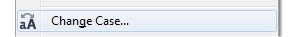

ВОПРОС / ОТВЕТ ДЛЯ НАЧИНАЮЩИХ
polzovatel-902 / 13.07.2010, 09:21/00:41
Форум:
Объясню на примере, чтоб было понятней... Открываю в кореле картинку (футболку с надписью) в формате JPG, мне нужно вытянуть из футболки надпись, т.е разъеденить файл... Говорят нужно формат изменить, еще что-то... Объясните, пожалуйста, что нужно сделать для этого...? Заранее спасибо.
Sancho, тока ему для этого надо мануал скурить :)
Ничего курить не нужно. Достаточно уметь работать с примитивами (рисовать, обрезать, сливать) и градиентными заливками и всё! Вот ссылки в помощь:
http://cdrpro.ru/news/2010-04-06-233
http://cdrpro.ru/news/2010-01-13-211
http://cdrpro.ru/news/2010-01-19-212
Санчо, еще один вопрос по Х5
При конвертации в жпег в 13 версии параметры запоминаются по предыдущему файлу (разрешение, цветность, качество сжатия и т.п) , а в Х5 автоматом все по новой ставить приходится. Когда многостраничный документ конвертишь куча времени уходит, может можно где-нибудь выставить, чтобы он запоминал?
Спасибо заранее.
Сохранить пресет. Окно экспорта забирает данные из текущего файла.
Санчо, спасибо!!!
Подскажите пожалуйста, как можно в кореле и можно ли вообще маленькие буквы перевести в заглавные? Заранее спасибо
zanuda, прочитай это:
Работа с текстом 1 - http://cdrpro.ru/news/2009-08-04-125
Работа с текстом 2 - http://cdrpro.ru/news/2010-06-11-241
Настройка интерфейса - http://cdrpro.ru/news/2010-08-08-261
...и найдёшь ответы не только на этот вопрос, но и узнаешь много по теме.
Ну а если горит, то в меню текст смотрим внимательно и ищем это:

или Shift+F3
Подскажите пожалуйста
можно ли сделать так, чтобы файл при сохранение
сохранял :) автоматически в ранней версии
(мне напр. нужно в 12, а стоит 13 и 14??)
или мож макрос есть такой?
а то так достает это 8-)
Добавлено (11.11.2010, 10:10)
---------------------------------------------
уже разобралась :D
Добавлено (12.11.2010, 09:15)
---------------------------------------------
нет, не разобралась :(
установила
http://macromonster.com/index.php?mod=descr&id_desc=21&pageNum_rs_produc...
дико радовалась, но через несколько сохранений все сбилось, теперь он сохраняет обычно, по умолчанию
ну что мне делать?
Помогите,пожалуйста. Есть уже готовый буклет в кореле, необходимо поменять в нем текст - там итальянский, а нужно поменять на английский. Корел вижу раз третий в жизни, а сделать нужно срочно и времени доскональна изучать работу с текстом нет. Наткнулась на то, что тот уже готовый текст я не могу редактировать, почему? И как это все сделать, чтобы осталось красиво и правильно?
Страницы